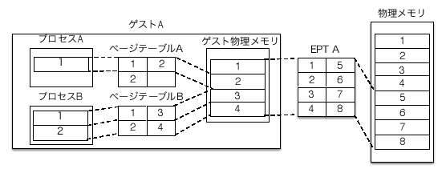

Next: VPID
Up: ハイパーバイザの作り方～ちゃんと理解する仮想化技術～ 第２回 Intel VT-xの概要とメモリ仮想化
Previous: シャドーページング
Nehalem以降のIntelのCPUでは、メモリ仮想化をCPUで支援する機能である「EPT」が追加されました。EPTをゲストマシンで有効にするには、64bitモードにおけるページングと同様に4段のページテーブルを作成し、ゲスト物理アドレスからホスト物理アドレスへのマッピング情報を書き込み、VMCSのVM Execution control fieldにあるExtended Page Table Pointer（EPTP）にページマップレベル4テーブルのアドレスをセットします。
これにより、ゲストマシンから仮想メモリ空間への参照が行われた時に、CR3にセットされたページテーブルでゲスト物理アドレスへの変換が行われます。さらにEPTPにセットされたページテーブルでゲスト物理アドレスからホスト物理アドレスへの変換が行われます（図7）。
Figure 7:
ゲスト物理アドレスからホスト物理アドレスへの変換
|

|
シャドーページングの場合は、CR3レジスタやページテーブルエントリへの読み書きのたびにシャドーページテーブルを構築していました。このときにVMExitが発生し、オーバヘッドとなっていましたが、EPTではこの処理が省かれることにより、パフォーマンスが向上します((ハイパーバイザの実装によっては30％ほど高速化すると言われています。))。
EPTのページテーブルエントリは、通常のページテーブルエントリとフィールドの割り当てが異なります。
Takuya ASADA
2014-04-24